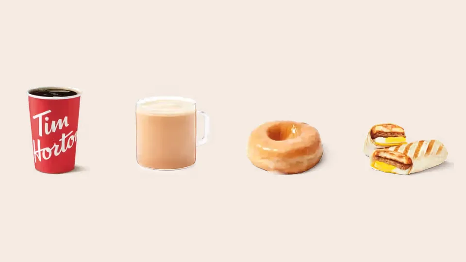

Unofficial fan guide - not affiliated with Tim Hortons
Where the coffee, eggs and dairy come from, what is in the donuts and drinks, and a dated allergen table for 12 popular items.
Full Menu / Blog / Tim Hortons Ingredients

Tim Hortons brews 100% Arabica coffee, uses 100% Canadian Grade A eggs in breakfast sandwiches, and sources Canadian milk, cream, butter, cheese and potatoes. Its core menu has been free of artificial colours, flavours and preservatives since the end of 2021. Ten common allergens are tracked for every item.
Tim Hortons builds its Canadian menu around a short list of headline ingredients: Arabica coffee, Canadian dairy, freshly cracked Canadian eggs and bakery items made without artificial additives. Those commitments come from a 2021 release under the company's Tims For Good platform and its freshly cracked egg launch in February 2021.
This table pulls the sourcing claims together in one place. Each line is something Tim Hortons has stated publicly, with the date it said it.
| Ingredient | What Tim Hortons says | Source and date |
|---|---|---|
| Coffee | 100% premium Arabica beans, brewed every 20 minutes | Tims For Good release, 2021 |
| Eggs | 100% Canadian Grade A large eggs, freshly cracked in restaurant kitchens, with the Egg Quality Assurance (EQA) mark | Freshly cracked eggs launch, February 2021 |
| Milk, cream, butter, cheese, potatoes | Sourced from Canadian farmers | Tims For Good release, 2021 |
| Bagels, English muffins, biscuits, croissants | Baked without artificial colours, flavours or preservatives | Tims For Good release, 2021 |
| Rest of the core menu | Free of artificial colours, flavours and preservatives by the end of 2021 | Tims For Good release, 2021 |
| Donuts and Timbits | Par-baked at a central bakery in Brantford, Ontario, frozen, then finished in restaurant ovens | Industry and court reporting on the "Always Fresh" system, since 2003 |
The pattern is clear: Tim Hortons talks about where ingredients come from more than it publishes full recipes. For an exact ingredient statement, check the item in the Tim Hortons app or on timhortons.ca, or ask the restaurant.
A cup of Original Blend is brewed from 100% Arabica coffee and water, and nothing else. The bagged Tim Hortons coffee sold in grocery stores lists a single ingredient, 100% Arabica coffee. Tim Hortons' July 2024 Canadian allergen guide marks no allergens at all for Original Blend, Dark Roast or Decaf served black.
What you add changes the ingredient list. A Double Double is coffee with two creams and two sugars, so it contains milk. Specialty drinks go further:
French Vanilla is a sweet, creamy hot drink, and it is not simply coffee with a vanilla shot. The July 2024 guide marks it as containing both milk and soy, which surprises many people who assume it is dairy-only. If you avoid soy, this is the hot drink to check first.
The Original Iced Capp is a frozen blended coffee drink with a creamy base. The allergen guide lists milk as an ingredient and marks wheat and gluten and tree nuts as "may contain". Flavoured versions add more: the Oreo Iced Capp contains wheat.
Tea is the simplest option on the menu. Steeped Tea served plain carries no allergen marks in the guide, while a London Fog or Latte contains milk and may contain tree nuts.
Tim Hortons donuts and Timbits are made from wheat flour, sugar, fat and dairy, and most cake-style varieties also contain egg and soy. Every donut and Timbit in the July 2024 Canadian guide contains wheat and milk, and every one carries a tree nut flag, almost always as "may contain".
The split between cake and yeast dough shows up in the allergens. Cake donuts and Timbits, such as Old Fashioned Plain, Sour Cream Glazed and Chocolate Glazed, contain egg and soy. Yeast-raised items, such as the Honey Dip, Maple Dip and Boston Cream, list egg and soy only as "may contain". A few items carry extra flags: the Walnut Crunch Donut contains tree nuts, and the Wildberry Cheesecake Filled Ring Dream Donut is marked "may contain" peanuts.
The baking method matters too. Since 2003, Tim Hortons has par-baked donuts at a central bakery, flash-frozen them and finished them in restaurant ovens, rather than making dough from scratch in each store. Franchisees who sued over the change in 2008 lost the case. Our guide to whether Tim Hortons donuts are baked or fried covers the process, and the Timbits menu lists flavours and pack sizes.
Breakfast sandwiches are built from freshly cracked Canadian eggs, cheese, a meat, and a bagel, English muffin, biscuit or wrap. Tim Hortons switched from a pre-formed egg patty to freshly cracked eggs nationally on February 3, 2021, partnering with Egg Farmers of Canada, which represents about 1,100 egg farmers.
Not everyone liked it. A petition titled "Bring Back the Tims Egg Patty!" circulated soon after, which shows how much the ingredient change was noticed. The bread side changed in the same period: Classic Bagels, English muffins and biscuits were among the first items reworked to drop artificial colours, flavours and preservatives.
In allergen terms, a Sausage Farmer's Wrap contains wheat, milk, egg and soy. Bagel BELT sandwiches add sesame, and the Steak & Egg Homestyle Biscuit adds mustard. See our breakfast menu for the full lineup.
Lunch items vary the most, so they are where ingredient checks pay off. Soups range from a single allergen to several, and sauces add hidden ones.
The July 2024 guide shows Beef Chili containing soy and none of the other nine tracked allergens, which makes it one of the simpler hot lunch items. Tomato Parmesan Soup contains milk only. Clam Chowder contains wheat, milk, and fish and shellfish. The Grilled Cheese Melt contains wheat, milk, soy and sesame. Mayonnaise contains egg and mustard, so any sandwich with it does too.
This table lists ten common allergens for 12 popular items, from Tim Hortons' Canadian allergen guide dated July 2024. "Contains" means the allergen is an ingredient; "may contain" means possible cross-contact. Recipes change, so check the current guide before ordering.
| Item | Contains | May contain |
|---|---|---|
| Original Blend Coffee (black) | None listed | None listed |
| Double Double Coffee | Milk | None listed |
| French Vanilla | Milk, soy | None listed |
| Original Iced Capp | Milk | Wheat and gluten, tree nuts |
| Steeped Tea (plain) | None listed | None listed |
| Honey Dip Donut | Wheat and gluten, milk | Egg, soy, tree nuts, sulphites |
| Boston Cream Donut | Wheat and gluten, milk, sulphites | Egg, soy, tree nuts |
| Chocolate Glazed Timbit | Wheat and gluten, milk, egg, soy | Tree nuts, sulphites |
| Sausage Farmer's Wrap | Wheat and gluten, milk, egg, soy | None listed |
| Plain Bagel BELT Sandwich | Wheat and gluten, milk, egg, soy, sesame | Tree nuts, sulphites |
| Beef Chili | Soy | None listed |
| Clam Chowder | Wheat and gluten, milk, fish and shellfish | None listed |
The ten allergens Tim Hortons tracks are wheat and gluten, milk, egg, soy, peanuts, tree nuts, fish and shellfish, sesame, mustard and sulphites. Peanuts are rare on the menu: the peanut butter spread and the Peanut Butter Cookie contain them, and only a handful of other items carry a "may contain" peanut warning.
Not on its core menu, according to Tim Hortons. In 2021 the company committed to making its core menu free of artificial colours, flavours and preservatives by the end of that year.
The pledge covers the core menu, so limited-time items, seasonal drinks and partner products (such as candy-branded Iced Capps) may not meet the same standard. If artificial colours matter to you, the everyday menu is the safer choice.
Options are limited on both fronts. Tim Hortons added Beyond Meat breakfast sandwiches in June 2019 and Beyond Burgers in July 2019. It cut them back to Ontario and British Columbia that September and removed them entirely on January 29, 2020, saying the product "was not embraced by our guests".
For gluten, every bakery item in the July 2024 guide contains wheat or is marked "may contain" wheat, and the guide warns that shared ovens, toasters and utensils mean cross-contact cannot be ruled out. Tim Hortons did sell a certified gluten-free coconut macaroon from 2013, but it does not appear in the 2024 guide. Black coffee, plain tea and some soups are the items with no wheat listed.
Use Tim Hortons' own information first. The allergen guide says it is "based on standard product formulations and information provided by our suppliers", that test, limited-time and some regional items may not be listed, and that you should check timhortons.ca "on a regular basis" before ordering.
In practice, three steps cover most needs: look the item up in the Tims app or on timhortons.ca, check the current allergen guide for anything you must avoid, and tell the staff about a serious allergy when you order. Calories are listed on each item page in our menu guides, starting with the coffee menu. If you follow halal rules, see our separate guide to whether Tim Hortons is halal.
Tim Hortons uses 100% Arabica beans. The company says its coffee is brewed every 20 minutes in restaurants.
Yes. Since February 2021, Tim Hortons breakfast sandwiches in Canada have used freshly cracked 100% Canadian Grade A large eggs, sourced with Egg Farmers of Canada.
They are finished in the restaurant, not made from scratch there. Since 2003, donuts have been par-baked at a central bakery, frozen and baked off in restaurant ovens.
Yes. Tim Hortons' July 2024 allergen guide lists milk and soy as ingredients in French Vanilla.
Black brewed coffee is. Original Blend, Dark Roast and Decaf served black have no allergens listed, but a Double Double, latte or Iced Capp contains milk.
Not on its core menu. Tim Hortons committed to removing artificial colours, flavours and preservatives from its core menu by the end of 2021, though limited-time items may differ.
Most do not contain nuts as an ingredient, but the July 2024 guide marks the donuts and Timbits as "may contain" tree nuts. The Walnut Crunch Donut contains tree nuts.
Peanuts are uncommon on the menu, but Tim Hortons cannot guarantee any item is free from cross-contact. A few items carry a "may contain" peanut warning, so check the current guide and tell staff before ordering.
Very few. Tim Hortons removed its Beyond Meat items in January 2020, and most bakery items contain milk. Black coffee and plain tea are the simplest choices.
Not chain-wide. Tim Hortons in Canada does not hold halal certification for its menu, though a few individually owned locations are exceptions. Tim Hortons Singapore received MUIS halal certification, but that does not apply to Canadian restaurants.
From Canadian farmers. Tim Hortons says its milk, cream, butter, cheese and potatoes are sourced in Canada.
Wheat is not listed for Beef Chili in the July 2024 guide, which marks soy as its only tracked allergen. Shared kitchen equipment still means cross-contact is possible.
This is an independent, unofficial guide. It is not affiliated with, endorsed by, or sponsored by Tim Hortons or Restaurant Brands International. Sourcing facts come from Tim Hortons' 2021 releases; allergen data from Tim Hortons' Canadian allergen guide (July 2024). Recipes change and kitchens share equipment: always check the current guide at timhortons.ca and tell staff about allergies. See Sources.